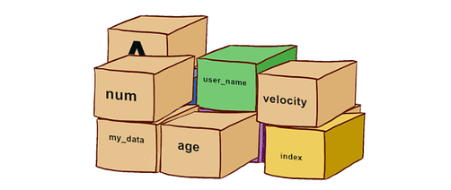
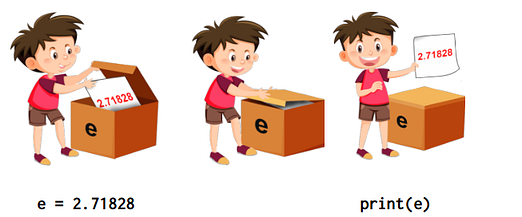
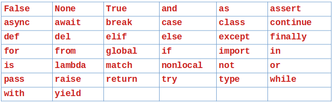

Дані в комп'ютерних програмах зберігаються та опрацьовуються у вигляді величин. Величини бувають:
1, 485, -62, 58.14, "Computer", "Мама мила раму". У Python такі непоіменовані величини називають літералами;Змінна — це область пам'яті комп'ютера, в якій зберігається значення. На думку програміста, ця змінна визначається ім'ям, тоді як для комп'ютера це фактично адреса, тобто конкретна область пам'яті.

Поняття «змінної» легко зрозуміти, якщо уявити її у вигляді «коробки» для даних: кожна коробка має унікальну назву. Наприклад, зміннуmessage можна уявити як коробку з підписом message (повідомлення), у якій лежить значення "Привіт!", причому в цю саму «коробку» можна будь-коли покласти інше значення.
У Python оголошення змінної та її ініціалізація (тобто перше значення, яке ми в неї записуємо) відбуваються одночасно. На відміну від деяких інших мов програмування (C++, Pascal), у Python змінну не потрібно окремо оголошувати (описувати) — вона створюється в момент першого присвоєння їй значення.
Щоб переконатися в цьому, збережіть та виконайте такий скрипт:
x = 2
print(x)
Результат виконання:
2
Рядок 1. У цьому прикладі ми оголосили, а потім ініціалізували змінну x зі значенням 2. Насправді відбулося кілька речей:
x.x.В інших мовах (наприклад, у C) потрібно прописувати ці різні етапи один за одним. Оскільки Python — мова високого рівня, простої інструкції x = 2 було достатньо, щоб виконати всі три етапи за один раз.
Рядок 2. Зверніть увагу, що ми одразу скористалися функцією print(x), щоб побачити вміст змінної. Це важливо: в інтерактивному інтерпретаторі Python досить просто набрати ім'я змінної (x), і він одразу покаже її значення — це особливість інтерпретатора, дуже зручна для пошуку (налагодження) помилок у програмі. Однак рядок скрипту Python, який містить лише ім'я змінної (без жодних інших вказівок), не покаже значення змінної на екрані під час виконання (сама інструкція залишається валідною й не викличе помилки). Тому в скрипті обов'язково використовують функцію виведення print():
e = 2.71828
print(e)
Результат виконання:
2.71828

Використовувати змінну можна лише після того, як їй надано значення — використання неініціалізованої змінної спричинить помилку.Починаючи з версії 3.10, інтерпретатор Python покращив свої повідомлення про помилки. Тепер він здатен підказувати існуючі імена змінних, коли ви робите одруківку:
holosni = "аеиоую"
print(holosna)
Результат виконання:
NameError: ім'я 'holosna' не визначено. Можливо, ви мали на увазі: 'holosni'?
Якщо набране слово не дуже відрізняється, це також спрацює, навіть якщо помилка в різних частинах слова:
apteka = "продаж ліків"
print(farmacia)
Результат виконання:
NameError: ім'я 'farmacia' не визначено. Можливо, ви мали на увазі: 'apteka'?
Символ = називається оператором присвоювання. Він дозволяє присвоїти значення змінній у Python. Важливо: у програмуванні = не означає «дорівнює» — цей символ читається як «присвоєно значення» або «надано значення».
Присвоєння — надання величині імені, за яким можна використовувати її значення.
Оператор = завжди використовується справа наліво: у інструкції x = 2 Python приписує значення, розташоване праворуч (тут, 2), змінній, розташованій ліворуч (тут, x). Інші мови програмування, наприклад R, використовують символи <-, щоб зробити присвоювання більш явним: x <- 2.
Ось інші випадки використання оператора =:
x = 2
y = x
print(y)
x = 5 - 2
print(x)
Результат виконання:
2
3
Рядок y = x. Тут ми маємо ім'я змінної праворуч (x) та ліворуч (y) від оператора =. Дотримуючись правила руху справа наліво, вміст змінної x присвоюється змінній y (тобто ми оголосили дві змінні й скопіювали дані з однієї в іншу).
Рядок x = 5 - 2. Якщо праворуч від оператора = стоїть вираз (тут — віднімання 5 - 2), спочатку обчислюється він, і результат присвоюється змінній x. Попереднє значення x (2) при цьому перезаписується.
Оператор присвоювання
=систематично перезаписує значення змінної, розташованої ліворуч від нього, якщо вона вже існує. Коли значення змінюється, старі дані просто зникають, замінені новими.
Можна також оголосити декілька змінних в одному рядку (наприклад, a, b = 5, 8), однак заради кращої читабельності коду рекомендується надавати кожній змінній значення в окремому рядку — такий спосіб трохи довший, але його легше читати.
Тип даних — це спосіб класифікації даних, від якого залежить, яким чином дані опрацьовуються комп'ютером. Тип даних визначає можливі операції з цими даними та спосіб представлення цих даних у пам'яті. Тип змінної відповідає її природі.
Кожна мова програмування має власні правила опрацювання різних даних. У Python не потрібно окремо описувати тип даних — це визначається автоматично, але при роботі з даними важливо знати їхній тип.
Три основні типи, які нам знадобляться насамперед:
int) — цілі додатні та від'ємні числа і нуль: -2; 0; 15; 25000; -655536;float) — числа з крапкою, яка відділяє дробову частину: 2.15; 0.4; -76.08; 3.14159;str) — послідовності символів: "Python"; "м"; "мама мила раму"; "gtrerr456h_67&^*".Звичайно, існує багато інших типів (логічні, комплексні числа тощо), з якими ми познайомимось пізніше; охочі можуть звернутись до офіційної документації¹.
У попередньому прикладі ми зберегли ціле число (int) у змінній x, але можна зберігати float, рядки або інші типи змінних:
y = 3.14
print(y)
a = "привіт"
print(a)
b = 'вітаю'
print(b)
c = """жираф"""
print(c)
d = '''лев'''
print(d)
Результат виконання:
3.14
привіт
вітаю
жираф
лев
Python автоматично розпізнає деякі типи змінних (ціле число,
float). Однак рядок потрібно брати в лапки (подвійні, одинарні або потрійні), щоб вказати Python початок і кінець рядка. В інтерпретаторі показ вмісту рядка відбувається з одинарними лапками, незалежно від типу лапок, використаних при визначенні. У Python, як і в більшості мов програмування, саме крапка використовується як десятковий роздільник:3.14розпізнається якfloat, тоді як3,14— ні. Однорядковий рядковий літерал обмежується одинарними або подвійними лапками, а багаторядковий — потрійними ('''...''').
Існують також змінні логічного типу. Логічна змінна — це змінна, яка набуває лише двох значень: Істина або Хиба. У Python для цього використовують два зарезервовані слова True та False:
var = True
var2 = False
print(var)
print(var2)
Результат виконання:
True
False
Ми побачимо користь логічних змінних у розділах 5 «Цикли» та 6 «Перевірки».
Дізнатися тип даних можна за допомогою функції type() (докладніше — у §2.6).
Вибір відповідного типу даних впливає на швидкість виконання та ефективність коду:
Цілі числа корисні для підрахунку об'єктів і представлення цілочисельних значень:
Числа з рухомою крапкою застосовують там, де потрібні точність і дробові значення:
Рядки є незамінними інструментами для роботи з текстом:
Мови програмування зазвичай мають можливість подавати ці типи даних, а також надають можливість створювати власні або складені типи для опрацювання спеціалізованих даних — з ними ми познайомимось пізніше.
Імена змінних, функцій та інших програмних об'єктів у Python називаються ідентифікаторами. Кожен ідентифікатор має бути унікальним — не може існувати двох різних об'єктів з однаковим іменем.
Правила створення імен змінних (ідентифікаторів):
_);_ (окрім особливих випадків);print, range, for, from тощо);TesT, test, TEST та, наприклад, apple і AppLE — це різні змінні.У мові Python є 33 зарезервовані ключові слова, які використовуються самою мовою і не можуть слугувати іменами змінних чи інших програмних об'єктів. Спроба назвати змінну зарезервованим словом призводить до помилки.

Наскільки це можливо, радимо давати змінним зрозумілі імена та, за рідкісними винятками, уникати імен з однієї літери.
Для довгого імені, яке містить декілька слів, зазвичай використовують зміїний регістр (snake_case): слова йдуть одне за одним, а замість пропусків використовується символ підкреслення _. Наприклад:
my_very_long_namefile_not_found_messageboot_programserver_downturtle_directionБільшість проблем з іменуванням виникає через бажання зробити ім'я коротким: індекси циклу часто називають i, j, k; кількість — n; рядкову величину — s; окремий символ — c. Так само шкодить і намагання «прямого перекладу» математичних чи фізичних формул у код — усе це робить код незрозумілим навіть для того, хто його писав.
Декілька хороших правил найменування:
user_name або product_price.l (ель) та великою літерою I (і) через їхню схожість.a, b, c, окрім випадків, коли ви точно знаєте, що це доречно.data чи value погані, бо нічого не говорять про призначення.velocity_avg, distance_avg, velocity_min, distance_max).item_count замість num.i, j, k, де це можливо.Дуже великі або дуже малі числа можна записувати за допомогою степенів числа 10, використовуючи символ e:
print(1e6)
print(3.12e-3)
Результат виконання:
1000000.0
0.00312
Це називається науковим записом (нотацією). Варто відзначити дві важливі речі:
1e6 або 3.12e-3 не передбачає використання експоненційного числа e, а означає 1×10⁶ або 3.12×10⁻³ відповідно;e стоять лише цілі числа (як у 1e6), Python систематично генерує float.Іноді буває незручно писати числа, що складаються з багатьох цифр, наприклад, число Авогадро 6.02214076×10²³ або орієнтовна кількість людей на Землі — 8 094 752 749. Щоб полегшити сприйняття, Python дозволяє використовувати символ підкреслення (_) для розділення груп цифр. Наприклад:
avogadro_number = 6.022_140_76e23
print(avogadro_number)
humans_on_earth = 8_094_752_749
print(humans_on_earth)
Результат виконання:
6.02214076e+23
8094752749
У цих прикладах символ _ розділяє групи по три цифри, але групувати можна як завгодно:
print(80_94_7527_49)
Результат виконання:
8094752749
Чотири основні арифметичні операції виконуються просто над числовими типами (цілі числа та float):
x = 45
print(x + 2)
print(x - 2)
print(x * 3)
y = 2.5
print(x - y)
print((x * 10) + y)
Результат виконання:
47
43
135
42.5
452.5
Якщо ви змішуєте типи int та float, результат повертається як float (оскільки цей тип більш загальний). Дужки дозволяють керувати пріоритетами операцій.
Оператор / виконує ділення і, на відміну від +, - та *, повертаючи значення типу float:
print(3 / 4)
print(2.5 / 2)
print(6 / 3)
print(10 / 2)
Результат виконання:
0.75
1.25
2.0
5.0
Оператор піднесення до степеня — **:
print(2**3)
print(2**4)
Результат виконання:
8
16
Щоб отримати частку та остачу від цілочисельного ділення, використовують символи // (частка) та % (остача):
print(5 // 4)
print(5 % 4)
print(8 // 4)
print(8 % 4)
Результат виконання:
1
1
2
0
Символи +, -, *, /, **, // та % називаються операторами, оскільки виконують операції над змінними.
Існують також «комбіновані» оператори, що виконують операцію та присвоювання за один крок:
i = 0
i = i + 1
print(i)
i += 1
print(i)
i += 2
print(i)
Результат виконання:
1
2
4
Оператор += виконує додавання, а потім присвоює результат тій самій змінній. Ця операція називається «інкрементацією». Оператори -=, *= та /= поводяться аналогічно для віднімання, множення та ділення.
Для рядків можливі дві операції: додавання та множення:
riadok = "Привіт"
print(riadok)
print(riadok + " Python")
print(riadok * 3)
Результат виконання:
Привіт
Привіт Python
ПривітПривітПривіт
Оператор додавання + конкатенує (з'єднує) два рядки — це називається конкатенацією. Оператор множення * між цілим числом і рядком дублює (повторює) рядок кілька разів — це називається дублюванням. Рядки можна об'єднувати лише з іншими рядками, а розмножувати — лише на ціле число.
Оператори
+і*поводяться по-різному для цілих чисел і для рядків: операція2 + 2— це додавання, тоді як"2" + "2"— конкатенація. Це називається перевизначенням операторів. Ми повернемось до цього поняття в розділі 24 «Більше про класи та об'єкти» (онлайн).
Остерігайтеся виконувати недопустимі операції, інакше отримаєте повідомлення про помилку:
print("тото" * 1.3)
Результат виконання:
TypeError: can't multiply sequence by non-int of type 'float'
print("тото" + 2)
Результат виконання:
TypeError: can only concatenate str (not "int") to str
Python надає інформацію у повідомленні про помилку: у другому прикладі вказано, що потрібно використовувати змінну типу str, а не int.
Підсумок правил:
float;Розглянемо, як Python обчислює послідовність інструкцій, коли ім'я змінної в правій частині заміняється на її поточне значення:
a = 2
b = 3
c = a * 5
d = b * 6
e = c + d
Простежимо крок за кроком:
| Крок | Інструкція | Значення |
|---|---|---|
| 1 | a = 2 |
a = 2 |
| 2 | b = 3 |
b = 3 |
| 3 | c = a * 5 |
c = 2 * 5 = 10 |
| 4 | d = b * 6 |
d = 3 * 6 = 18 |
| 5 | e = c + d |
e = 10 + 18 = 28 |
При виконанні програми, щойно трапляється ім'я змінної, замість нього автоматично підставляється її поточне значення. У результаті виконання цієї програми на екран буде виведено число 28.
Якщо ви не пам'ятаєте тип змінної, скористайтеся функцією type(), яка вам його нагадає:
x = 2
print(type(x))
y = 2.0
print(type(y))
z = '2'
print(type(z))
print(type(True))
Результат виконання:
<class 'int'>
<class 'float'>
<class 'str'>
<class 'bool'>
Клас — стосовно змінних є типом даних, який об'єднує кілька пов'язаних змінних (і, зазвичай, методів) в одну сутність.
Для Python значення
2(ціле число) відрізняється від2.0(float) і також відрізняється від'2'(рядок).
У програмуванні часто доводиться перетворювати типи, тобто переходити від числового типу до рядка або навпаки. У Python це реалізують функції int(), float() та str():
i = 3
print(str(i))
i = '456'
print(int(i))
print(float(i))
i = '3.1416'
print(float(i))
Результат виконання:
3
456
456.0
3.1416
Ми побачимо в розділі «Файли», що ці перетворення важливі: коли ми читаємо чи записуємо числа у файл, вони розглядаються як текст, тобто рядки, — тому їх потрібно перетворювати назад у числа.
Функція str() перетворює число на рядок — це знадобиться, якщо потрібно об'єднати число з рядком (спробувати додати число до рядка напряму, наприклад "тото" + 2, як бачили вище, викличе помилку саме тому, що поєднувати рядок і число без перетворення не дозволяється).
Функція int() робить зворотнє — перетворює рядок у ціле число, але тільки якщо рядок є записом числа. Для перетворення на число з рухомою крапкою використовують float().
Будь-яке перетворення змінної з одного типу в інший називається англійською casting; можливо, ви зустрінете цей термін і в інших джерелах.
У цьому розділі ми розглянули поняття змінної, яке є спільним для всіх мов програмування.
Python є мовою, яку називають «об'єктно-орієнтованою», тому надалі ми можемо використовувати слово «об'єкт» для позначення змінної. Наприклад, «змінна цілого типу» буде для нас еквівалентом «об'єкт цілого типу».
Крім того, у цьому розділі ми кілька разів зустрічали функції, зокрема type(), int(), float() та str(). У розділі 1 «Вступ» ми також бачили функцію print(). Ми розпізнаємо функцію за тим, що після її назви слідують дужки (наприклад, type()). У Python загальний синтаксис — функція().
Те, що знаходиться в дужках функції, називається аргументом — це те, що ми «передаємо» функції. В інструкції type(2) саме ціле число 2 є аргументом, переданим функції type(). Поки що запам'ятаємо, що функція — це своєрідна коробка, якій передають один (або кілька) аргумент(ів), яка виконує дію і може повертати результат або, частіше, об'єкт. Наприклад, функція type() повертає тип змінної, яку їй передали як аргумент. У Python, коли функція приймає кілька аргументів, їх слід розділяти комою.
Якщо ці поняття здаються незрозумілими, не хвилюйтеся — у міру просування курсом усе стане ясно.
Python пропонує функції min() та max(), які повертають мінімум і максимум кількох цілих чисел або float відповідно:
print(min(1, -2, 4))
pi = 3.14
e = 2.71
print(max(e, pi))
print(max(1, 2.4, -6))
Результат виконання:
-2
3.14
2.4
min() та max() — приклади функцій, що приймають кілька аргументів, розділених комою. Вони можуть приймати як аргументи стільки цілих чисел і float, скільки завгодно, але їх має бути щонайменше два.
Числа Фрідмана⁴ — це числа, які можна виразити за допомогою всіх своїх цифр у математичному виразі. Наприклад, 347 є числом Фрідмана, оскільки його можна записати у вигляді 4 + 7**3. Так само 127, який можна записати у вигляді 2**7 - 1.
Визначте, чи відповідають наступні вирази числам Фрідмана. Запишіть їх у Python і виконайте відповідний код:
7 + 3**6(3 + 4)**33**6 - 5(1 + 2**8) * 5(2 + 1**8)**7Спробуйте передбачити результат кожної з наступних інструкцій, а потім перевірте його в інтерпретаторі Python:
(1 + 2)**3"Да" * 4"Да" + 3("Па" + "Ла") * 2("Да" * 4) / 25 / 25 // 25 % 2Спробуйте передбачити результат кожної з наступних інструкцій, а потім перевірте його в інтерпретаторі Python:
str(4) * int("3")int("3") + float("3.2")str(3) * float("3.2")str(3 / 4) * 2Який тип даних матиме результат наступних виконаних операцій? (наприклад, 2 + 3, 2 + 3.0, "2" + "3", "2" * 3). Обґрунтуйте відповідь, використовуючи type().
Знайдіть спосіб дізнатися, яке найбільше ціле число, з яким може працювати Python (підказка: чи існує в Python обмеження на розмір int, як у деяких інших мовах?).
Поясніть спосіб, за яким числа з рухомою крапкою записуються в науковому записі. Як записати в такий спосіб числа 234000.0, 1234.0, 1234.5678?
Роздільна здатність екрана — кількість пікселів, які може відобразити екран пристрою по горизонталі та вертикалі. Типові значення:
Завдання 1. За допомогою Python визначте загальну кількість пікселів на екрані у режимах HD, Full HD та 4K.
Завдання 2. Кожен піксель зображення утворюється змішуванням трьох кольорів — червоного, зеленого та синього, кожен з яких може мати один з 256 рівнів (0–255), тобто на збереження одного пікселя потрібно 3 байти пам'яті (по одному байту на кожен колір). Визначте кількість байтів пам'яті, необхідних для збереження зображення у режимах HD, Full HD та 4K (загальну кількість пікселів помножте на кількість байтів на піксель).
Підказка: щоб не обчислювати кількість пікселів двічі, збережіть її в змінній після першого завдання й використайте цю змінну в другому.
Спробуйте створити змінну з іменем, що збігається з одним із зарезервованих ключових слів Python (наприклад, for, print, class). Яку помилку ви отримаєте? Поясніть, чому вона виникає.